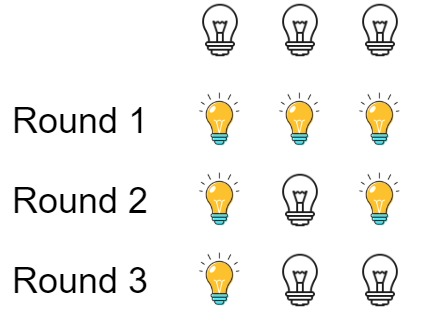

319. 灯泡开关
题目与约束
初始时有 n 个灯泡处于关闭状态。第一轮，你将会打开所有灯泡。接下来的第二轮，你将会每两个灯泡关闭第二个。
第三轮，你每三个灯泡就切换第三个灯泡的开关（即，打开变关闭，关闭变打开）。第 i 轮，你每 i 个灯泡就切换第 i 个灯泡的开关。直到第 n 轮，你只需要切换最后一个灯泡的开关。
找出并返回 n 轮后有多少个亮着的灯泡。
示例 1：

输入：n = 3
输出：1
解释：
初始时, 灯泡状态 [关闭, 关闭, 关闭].
第一轮后, 灯泡状态 [开启, 开启, 开启].
第二轮后, 灯泡状态 [开启, 关闭, 开启].
第三轮后, 灯泡状态 [开启, 关闭, 关闭].
你应该返回 1，因为只有一个灯泡还亮着。
示例 2：
输入：n = 0
输出：0
示例 3：
输入：n = 1
输出：1
提示：
0 <= n <= 109
核心不变量
第
i个灯泡最终亮着，当且仅当i的因数个数为奇数，即i是完全平方数；答案就是⌊√n⌋。
完整推导
思路推导
- 直觉与痛点（暴力模拟会爆）
最直白的做法是模拟每一轮，把所有灯泡状态写成一个数组，每轮翻转若干个。但 n 最大到 10^9，轮数也是 n，模拟是 O(n²) 甚至 O(n log n)，完全跑不动。必须找规律。
- 换个视角（每个灯泡被切换几次？）
不要顺着"轮次"看，而是盯住"第 i 个灯泡"。它会在哪些轮被切换？只有当轮数 d 整除 i 时（第 d 轮每 d 个切换第 d 个），第 i 个灯泡才会被切换。所以第 i 个灯泡被切换的次数，正好等于 i 的因数个数。
- 奇偶定生死（为什么只剩完全平方数？）
灯泡从"关闭"出发，被切换奇数次最终亮，偶数次最终灭。因数总是成对出现的（d 与 i/d 配对），唯独当 i 是完全平方数时，√i 这个因数和自己配对，落单了——于是因数个数为奇数。因此只有编号为 1, 4, 9, 16, … 的灯泡最终亮着。
- 数个数（答案即开方）
1², 2², …, k² 是 [1, n] 内所有完全平方数，最大的 k 满足 k² ≤ n，即 k = ⌊√n⌋。例如 n = 3，⌊√3⌋ = 1，与示例一致。
Java 实现（数学直接求解）
class Solution {
public int bulbSwitch(int n) {
// 亮着的灯泡数 = [1, n] 中完全平方数的个数 = floor(sqrt(n))
// n <= 1e9，Math.sqrt 的 double 精度在此范围内足以精确取整
return (int) Math.sqrt(n);
}
}
C++ 实现
#include <cmath>
using namespace std;
class Solution {
public:
int bulbSwitch(int n) {
// 亮着的灯泡数等于 [1, n] 内完全平方数的个数 floor(sqrt(n))
return (int) sqrt((double) n);
}
};
Python 实现
class Solution:
def bulbSwitch(self, n: int) -> int:
# math.isqrt 返回精确的整数平方根（向下取整），避免浮点误差
import math
return math.isqrt(n)
复杂度
- 时间：
O(1)。只需一次开方运算，与n的大小无关。 - 空间：
O(1)。只用了常数个变量。
- 千万不要写模拟：看到
n ≤ 10^9就该立刻意识到这是数学题，O(n)以上的做法全部超时。 - "切换"与"因数个数"的对应关系：第
i个灯泡只在i的因数为轮数时被切换，次数等于因数个数，这是整题的题眼，面试时要能一句话讲清。 - 为什么只有完全平方数：因数成对出现，只有完全平方数的平方根是"落单"的那个因数，导致个数为奇数——这是解释的核心逻辑。
Math.sqrt的取整陷阱：直接(int) Math.sqrt(n)是向下取整，符合⌊√n⌋；不要四舍五入（Math.round），否则n = 3会错成 2。- 扩展：若把题目改成"每
i轮切换所有编号是i的倍数的灯泡"，本质相同；若允许每轮切换不同规则，则需重新分析每个灯泡的翻转次数奇偶性。